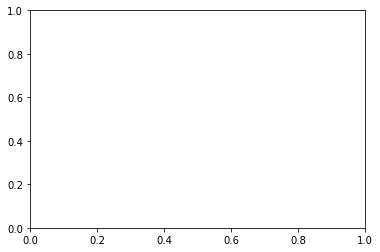

import tqdm
import numpy as np
import pandas as pd
import matplotlib.pyplot as plt
import plotly.express as px
import warnings
warnings.simplefilter("ignore", np.ComplexWarning)
from haversine import haversine
from IPython.display import HTML
import plotly.graph_objects as goStock on Graph
STGCN
Import
import rpy2
import rpy2.robjects as ro
from rpy2.robjects.vectors import FloatVector
from rpy2.robjects.packages import importrData intro(2020~2022)
Korea
df_korea = pd.read_csv('./dataset/korea_kospi.csv')df_korea.loc[:,'Open'].mean<bound method NDFrame._add_numeric_operations.<locals>.mean of 0 2276.919922
1 2299.090088
2 2277.219971
3 2285.929932
4 2293.070068
...
1227 2580.889893
1228 2604.719971
1229 2593.469971
1230 2574.750000
1231 2547.409912
Name: Open, Length: 1232, dtype: float64>df_korea = pd.concat([df_korea,pd.DataFrame({'Country': "Korea",
'Value':(df_korea['Close'] - df_korea['Close'].mean())/df_korea['Close'].std()})],axis=1)df_korea_add = df_korea.assign(Year = list(map(lambda x: x.split('-')[0],df_korea['Date'])),\
Mon = list(map(lambda x: x.split('-')[1],df_korea['Date'])),\
Day = list(map(lambda x: x.split('-')[2],df_korea['Date'])))df_korea_add.Year = df_korea_add.Year.astype(np.float64)
df_korea_add.Mon = df_korea_add.Mon.astype(np.float64)
df_korea_add.Day = df_korea_add.Day.astype(np.float64)df_korea_covid = df_korea_add.query("Year>=2020 and Year <= 2022");df_korea_covid| Date | Open | High | Low | Close | Adj Close | Volume | Country | Value | Year | Mon | Day | |
|---|---|---|---|---|---|---|---|---|---|---|---|---|
| 364 | 2020-01-02 | 2201.209961 | 2202.320068 | 2171.840088 | 2175.169922 | 2175.169922 | 494700 | Korea | -0.719054 | 2020.0 | 1.0 | 2.0 |
| 365 | 2020-01-03 | 2192.580078 | 2203.379883 | 2165.389893 | 2176.459961 | 2176.459961 | 631600 | Korea | -0.715806 | 2020.0 | 1.0 | 3.0 |
| 366 | 2020-01-06 | 2154.969971 | 2164.419922 | 2149.949951 | 2155.070068 | 2155.070068 | 592700 | Korea | -0.769651 | 2020.0 | 1.0 | 6.0 |
| 367 | 2020-01-07 | 2166.600098 | 2181.620117 | 2164.270020 | 2175.540039 | 2175.540039 | 568200 | Korea | -0.718122 | 2020.0 | 1.0 | 7.0 |
| 368 | 2020-01-08 | 2156.270020 | 2162.320068 | 2137.719971 | 2151.310059 | 2151.310059 | 913800 | Korea | -0.779116 | 2020.0 | 1.0 | 8.0 |
| ... | ... | ... | ... | ... | ... | ... | ... | ... | ... | ... | ... | ... |
| 1099 | 2022-12-23 | 2325.860107 | 2333.080078 | 2311.899902 | 2313.689941 | 2313.689941 | 367000 | Korea | -0.370356 | 2022.0 | 12.0 | 23.0 |
| 1100 | 2022-12-26 | 2312.540039 | 2321.919922 | 2304.199951 | 2317.139893 | 2317.139893 | 427600 | Korea | -0.361672 | 2022.0 | 12.0 | 26.0 |
| 1101 | 2022-12-27 | 2327.520020 | 2335.989990 | 2321.479980 | 2332.790039 | 2332.790039 | 448300 | Korea | -0.322276 | 2022.0 | 12.0 | 27.0 |
| 1102 | 2022-12-28 | 2296.449951 | 2296.449951 | 2276.899902 | 2280.449951 | 2280.449951 | 405700 | Korea | -0.454032 | 2022.0 | 12.0 | 28.0 |
| 1103 | 2022-12-29 | 2265.729980 | 2272.669922 | 2236.379883 | 2236.399902 | 2236.399902 | 361000 | Korea | -0.564919 | 2022.0 | 12.0 | 29.0 |
740 rows × 12 columns
# plt.figure(figsize=(30, 8))
# plt.title('Korea (close)')
# plt.xticks(rotation=45)
# plt.plot(df_korea_covid['Date'], df_korea_covid['Close'], 'co-')
# plt.grid(color='gray', linestyle='--')US
df_us = pd.read_csv('./dataset/us_nasdaq.csv')df_us = pd.concat([df_us,pd.DataFrame({'Country': 'United States of America',
'Value':(df_us['Close'] - df_us['Close'].mean())/df_us['Close'].std()})],axis=1)df_us_add = df_us.assign(Year = list(map(lambda x: x.split('-')[0],df_us['Date'])),\
Mon = list(map(lambda x: x.split('-')[1],df_us['Date'])),\
Day = list(map(lambda x: x.split('-')[2],df_us['Date'])))df_us_add.Year = df_us_add.Year.astype(np.float64)
df_us_add.Mon = df_us_add.Mon.astype(np.float64)
df_us_add.Day = df_us_add.Day.astype(np.float64)df_us_covid = df_us_add.query("Year>=2020 and Year <=2022");df_us_covid| Date | Open | High | Low | Close | Adj Close | Volume | Country | Value | Year | Mon | Day | |
|---|---|---|---|---|---|---|---|---|---|---|---|---|
| 374 | 2020-01-02 | 9039.459961 | 9093.429688 | 9010.889648 | 9092.190430 | 9092.190430 | 2862700000 | United States of America | -0.695392 | 2020.0 | 1.0 | 2.0 |
| 375 | 2020-01-03 | 8976.429688 | 9065.759766 | 8976.429688 | 9020.769531 | 9020.769531 | 2586520000 | United States of America | -0.722486 | 2020.0 | 1.0 | 3.0 |
| 376 | 2020-01-06 | 8943.500000 | 9072.410156 | 8943.500000 | 9071.469727 | 9071.469727 | 2810450000 | United States of America | -0.703253 | 2020.0 | 1.0 | 6.0 |
| 377 | 2020-01-07 | 9076.639648 | 9091.929688 | 9042.549805 | 9068.580078 | 9068.580078 | 2381740000 | United States of America | -0.704349 | 2020.0 | 1.0 | 7.0 |
| 378 | 2020-01-08 | 9068.030273 | 9168.889648 | 9059.379883 | 9129.240234 | 9129.240234 | 2472620000 | United States of America | -0.681336 | 2020.0 | 1.0 | 8.0 |
| ... | ... | ... | ... | ... | ... | ... | ... | ... | ... | ... | ... | ... |
| 1125 | 2022-12-23 | 10437.750000 | 10514.759766 | 10361.820313 | 10497.860352 | 10497.860352 | 3544680000 | United States of America | -0.162131 | 2022.0 | 12.0 | 23.0 |
| 1126 | 2022-12-27 | 10462.190430 | 10472.320313 | 10340.730469 | 10353.230469 | 10353.230469 | 3827290000 | United States of America | -0.216999 | 2022.0 | 12.0 | 27.0 |
| 1127 | 2022-12-28 | 10339.200195 | 10414.820313 | 10207.469727 | 10213.290039 | 10213.290039 | 3842970000 | United States of America | -0.270087 | 2022.0 | 12.0 | 28.0 |
| 1128 | 2022-12-29 | 10321.459961 | 10502.080078 | 10301.059570 | 10478.089844 | 10478.089844 | 4154100000 | United States of America | -0.169631 | 2022.0 | 12.0 | 29.0 |
| 1129 | 2022-12-30 | 10368.370117 | 10468.309570 | 10324.700195 | 10466.480469 | 10466.480469 | 3959030000 | United States of America | -0.174036 | 2022.0 | 12.0 | 30.0 |
756 rows × 12 columns
# plt.figure(figsize=(30, 8))
# plt.title('US (close)')
# plt.xticks(rotation=45)
# plt.plot(df_us_covid['Date'], df_us_covid['Close'], 'co-')
# plt.grid(color='gray', linestyle='--')China
df_china = pd.read_csv('./dataset/china_ssec.csv')df_china = pd.concat([df_china,pd.DataFrame({'Country': 'China',
'Value':(df_china['Close'] - df_china['Close'].mean())/df_china['Close'].std()})],axis=1)df_china_add = df_china.assign(Year = list(map(lambda x: x.split('-')[0],df_china['Date'])),\
Mon = list(map(lambda x: x.split('-')[1],df_china['Date'])),\
Day = list(map(lambda x: x.split('-')[2],df_china['Date'])))df_china_add.Year = df_china_add.Year.astype(np.float64)
df_china_add.Mon = df_china_add.Mon.astype(np.float64)
df_china_add.Day = df_china_add.Day.astype(np.float64)df_china_covid = df_china_add.query("Year>=2020 and Year <=2022");df_china_covid| Date | Open | High | Low | Close | Adj Close | Volume | Country | Value | Year | Mon | Day | |
|---|---|---|---|---|---|---|---|---|---|---|---|---|
| 361 | 2020-01-02 | 3066.335938 | 3098.100098 | 3066.335938 | 3085.197998 | 3085.197998 | 292500 | China | -0.244680 | 2020.0 | 1.0 | 2.0 |
| 362 | 2020-01-03 | 3089.021973 | 3093.819092 | 3074.518066 | 3083.785889 | 3083.785889 | 261500 | China | -0.249433 | 2020.0 | 1.0 | 3.0 |
| 363 | 2020-01-06 | 3070.908936 | 3107.202881 | 3065.309082 | 3083.407959 | 3083.407959 | 312600 | China | -0.250705 | 2020.0 | 1.0 | 6.0 |
| 364 | 2020-01-07 | 3085.488037 | 3105.450928 | 3084.329102 | 3104.802002 | 3104.802002 | 276600 | China | -0.178700 | 2020.0 | 1.0 | 7.0 |
| 365 | 2020-01-08 | 3094.239014 | 3094.239014 | 3059.131104 | 3066.893066 | 3066.893066 | 297900 | China | -0.306289 | 2020.0 | 1.0 | 8.0 |
| ... | ... | ... | ... | ... | ... | ... | ... | ... | ... | ... | ... | ... |
| 1084 | 2022-12-26 | 3048.196045 | 3071.835938 | 3047.349121 | 3065.562988 | 3065.562988 | 206500 | China | -0.310766 | 2022.0 | 12.0 | 26.0 |
| 1085 | 2022-12-27 | 3077.750000 | 3098.080078 | 3074.310059 | 3095.570068 | 3095.570068 | 222200 | China | -0.209771 | 2022.0 | 12.0 | 27.0 |
| 1086 | 2022-12-28 | 3088.620117 | 3098.649902 | 3079.429932 | 3087.399902 | 3087.399902 | 224600 | China | -0.237270 | 2022.0 | 12.0 | 28.0 |
| 1087 | 2022-12-29 | 3076.729980 | 3086.000000 | 3064.459961 | 3073.699951 | 3073.699951 | 215600 | China | -0.283379 | 2022.0 | 12.0 | 29.0 |
| 1088 | 2022-12-30 | 3084.520020 | 3096.310059 | 3082.199951 | 3089.260010 | 3089.260010 | 217500 | China | -0.231009 | 2022.0 | 12.0 | 30.0 |
728 rows × 12 columns
# plt.figure(figsize=(30, 8))
# plt.title('China (close)')
# plt.xticks(rotation=45)
# plt.plot(df_china_covid['Date'], df_china_covid['Close'], 'co-')
# plt.grid(color='gray', linestyle='--')Japan
df_japan = pd.read_csv('./dataset/japan_n225.csv')df_japan = pd.concat([df_japan,pd.DataFrame({'Country': 'Japan',
'Value':(df_japan['Close'] - df_japan['Close'].mean())/df_japan['Close'].std()})],axis=1)df_japan_add = df_japan.assign(Year = list(map(lambda x: x.split('-')[0],df_japan['Date'])),\
Mon = list(map(lambda x: x.split('-')[1],df_japan['Date'])),\
Day = list(map(lambda x: x.split('-')[2],df_japan['Date'])))df_japan_add.Year = df_japan_add.Year.astype(np.float64)
df_japan_add.Mon = df_japan_add.Mon.astype(np.float64)
df_japan_add.Day = df_japan_add.Day.astype(np.float64)df_japan_covid = df_japan_add.query("Year>=2020 and Year<=2022");df_japan_covid| Date | Open | High | Low | Close | Adj Close | Volume | Country | Value | Year | Mon | Day | |
|---|---|---|---|---|---|---|---|---|---|---|---|---|
| 367 | 2020-01-06 | 23319.759766 | 23365.359375 | 23148.529297 | 23204.859375 | 23204.859375 | 72800000.0 | Japan | -0.604658 | 2020.0 | 1.0 | 6.0 |
| 368 | 2020-01-07 | 23320.119141 | 23577.439453 | 23299.919922 | 23575.720703 | 23575.720703 | 64300000.0 | Japan | -0.496240 | 2020.0 | 1.0 | 7.0 |
| 369 | 2020-01-08 | 23217.490234 | 23303.210938 | 22951.179688 | 23204.759766 | 23204.759766 | 79400000.0 | Japan | -0.604687 | 2020.0 | 1.0 | 8.0 |
| 370 | 2020-01-09 | 23530.289063 | 23767.089844 | 23506.150391 | 23739.869141 | 23739.869141 | 62200000.0 | Japan | -0.448252 | 2020.0 | 1.0 | 9.0 |
| 371 | 2020-01-10 | 23813.279297 | 23903.289063 | 23761.080078 | 23850.570313 | 23850.570313 | 55900000.0 | Japan | -0.415890 | 2020.0 | 1.0 | 10.0 |
| ... | ... | ... | ... | ... | ... | ... | ... | ... | ... | ... | ... | ... |
| 1093 | 2022-12-26 | 26299.539063 | 26438.650391 | 26294.849609 | 26405.869141 | 26405.869141 | 47300000.0 | Japan | 0.331131 | 2022.0 | 12.0 | 26.0 |
| 1094 | 2022-12-27 | 26570.779297 | 26620.490234 | 26447.869141 | 26447.869141 | 26447.869141 | 50200000.0 | Japan | 0.343410 | 2022.0 | 12.0 | 27.0 |
| 1095 | 2022-12-28 | 26309.339844 | 26354.269531 | 26199.669922 | 26340.500000 | 26340.500000 | 61500000.0 | Japan | 0.312021 | 2022.0 | 12.0 | 28.0 |
| 1096 | 2022-12-29 | 26074.900391 | 26126.699219 | 25953.919922 | 26093.669922 | 26093.669922 | 63100000.0 | Japan | 0.239862 | 2022.0 | 12.0 | 29.0 |
| 1097 | 2022-12-30 | 26288.000000 | 26321.369141 | 26067.919922 | 26094.500000 | 26094.500000 | 52700000.0 | Japan | 0.240105 | 2022.0 | 12.0 | 30.0 |
731 rows × 12 columns
# plt.figure(figsize=(30, 8))
# plt.title('Japan (close)')
# plt.xticks(rotation=45)
# plt.plot(df_japan_covid['Date'], df_japan_covid['Close'], 'co-')
# plt.grid(color='gray', linestyle='--')# with plt.style.context('seaborn-white'):
# fig, ((ax1, ax2), (ax3, ax4)) = plt.subplots(2, 2,figsize=(30,15))
# ax1.plot(df_korea_covid['Date'], df_korea_covid['Close'])
# ax2.plot(df_us_covid['Date'], df_us_covid['Close'])
# ax3.plot(df_china_covid['Date'], df_china_covid['Close'])
# ax4.plot(df_japan_covid['Date'], df_japan_covid['Close'])df = pd.concat([df_korea_covid,df_us_covid,df_china_covid,df_japan_covid]);df| Date | Open | High | Low | Close | Adj Close | Volume | Country | Value | Year | Mon | Day | |
|---|---|---|---|---|---|---|---|---|---|---|---|---|
| 364 | 2020-01-02 | 2201.209961 | 2202.320068 | 2171.840088 | 2175.169922 | 2175.169922 | 494700.0 | Korea | -0.719054 | 2020.0 | 1.0 | 2.0 |
| 365 | 2020-01-03 | 2192.580078 | 2203.379883 | 2165.389893 | 2176.459961 | 2176.459961 | 631600.0 | Korea | -0.715806 | 2020.0 | 1.0 | 3.0 |
| 366 | 2020-01-06 | 2154.969971 | 2164.419922 | 2149.949951 | 2155.070068 | 2155.070068 | 592700.0 | Korea | -0.769651 | 2020.0 | 1.0 | 6.0 |
| 367 | 2020-01-07 | 2166.600098 | 2181.620117 | 2164.270020 | 2175.540039 | 2175.540039 | 568200.0 | Korea | -0.718122 | 2020.0 | 1.0 | 7.0 |
| 368 | 2020-01-08 | 2156.270020 | 2162.320068 | 2137.719971 | 2151.310059 | 2151.310059 | 913800.0 | Korea | -0.779116 | 2020.0 | 1.0 | 8.0 |
| ... | ... | ... | ... | ... | ... | ... | ... | ... | ... | ... | ... | ... |
| 1093 | 2022-12-26 | 26299.539063 | 26438.650391 | 26294.849609 | 26405.869141 | 26405.869141 | 47300000.0 | Japan | 0.331131 | 2022.0 | 12.0 | 26.0 |
| 1094 | 2022-12-27 | 26570.779297 | 26620.490234 | 26447.869141 | 26447.869141 | 26447.869141 | 50200000.0 | Japan | 0.343410 | 2022.0 | 12.0 | 27.0 |
| 1095 | 2022-12-28 | 26309.339844 | 26354.269531 | 26199.669922 | 26340.500000 | 26340.500000 | 61500000.0 | Japan | 0.312021 | 2022.0 | 12.0 | 28.0 |
| 1096 | 2022-12-29 | 26074.900391 | 26126.699219 | 25953.919922 | 26093.669922 | 26093.669922 | 63100000.0 | Japan | 0.239862 | 2022.0 | 12.0 | 29.0 |
| 1097 | 2022-12-30 | 26288.000000 | 26321.369141 | 26067.919922 | 26094.500000 | 26094.500000 | 52700000.0 | Japan | 0.240105 | 2022.0 | 12.0 | 30.0 |
2955 rows × 12 columns
df['Country'].unique()array(['Korea', 'United States of America', 'China', 'Japan'],
dtype=object)COVID(2020~2022)
covid = pd.read_csv('./dataset/WHO-COVID-19-global-data.csv').iloc[:,[0,1,2,4,6]];covid| Date_reported | Country_code | Country | New_cases | New_deaths | |
|---|---|---|---|---|---|
| 0 | 2020-01-03 | AF | Afghanistan | 0 | 0 |
| 1 | 2020-01-04 | AF | Afghanistan | 0 | 0 |
| 2 | 2020-01-05 | AF | Afghanistan | 0 | 0 |
| 3 | 2020-01-06 | AF | Afghanistan | 0 | 0 |
| 4 | 2020-01-07 | AF | Afghanistan | 0 | 0 |
| ... | ... | ... | ... | ... | ... |
| 303355 | 2023-07-01 | ZW | Zimbabwe | 0 | 0 |
| 303356 | 2023-07-02 | ZW | Zimbabwe | 0 | 0 |
| 303357 | 2023-07-03 | ZW | Zimbabwe | 80 | 2 |
| 303358 | 2023-07-04 | ZW | Zimbabwe | 0 | 0 |
| 303359 | 2023-07-05 | ZW | Zimbabwe | 0 | 0 |
303360 rows × 5 columns
covid['Country'].unique()array(['Afghanistan', 'Albania', 'Algeria', 'American Samoa', 'Andorra',
'Angola', 'Anguilla', 'Antigua and Barbuda', 'Argentina',
'Armenia', 'Aruba', 'Australia', 'Austria', 'Azerbaijan',
'Bahamas', 'Bahrain', 'Bangladesh', 'Barbados', 'Belarus',
'Belgium', 'Belize', 'Benin', 'Bermuda', 'Bhutan',
'Bolivia (Plurinational State of)', 'Bonaire',
'Bosnia and Herzegovina', 'Botswana', 'Brazil',
'British Virgin Islands', 'Brunei Darussalam', 'Bulgaria',
'Burkina Faso', 'Burundi', 'Cabo Verde', 'Cambodia', 'Cameroon',
'Canada', 'Cayman Islands', 'Central African Republic', 'Chad',
'Chile', 'China', 'Colombia', 'Comoros', 'Congo', 'Cook Islands',
'Costa Rica', 'Côte d’Ivoire', 'Croatia', 'Cuba', 'Curaçao',
'Cyprus', 'Czechia', "Democratic People's Republic of Korea",
'Democratic Republic of the Congo', 'Denmark', 'Djibouti',
'Dominica', 'Dominican Republic', 'Ecuador', 'Egypt',
'El Salvador', 'Equatorial Guinea', 'Eritrea', 'Estonia',
'Eswatini', 'Ethiopia', 'Falkland Islands (Malvinas)',
'Faroe Islands', 'Fiji', 'Finland', 'France', 'French Guiana',
'French Polynesia', 'Gabon', 'Gambia', 'Georgia', 'Germany',
'Ghana', 'Gibraltar', 'Greece', 'Greenland', 'Grenada',
'Guadeloupe', 'Guam', 'Guatemala', 'Guernsey', 'Guinea',
'Guinea-Bissau', 'Guyana', 'Haiti', 'Holy See', 'Honduras',
'Hungary', 'Iceland', 'India', 'Indonesia',
'Iran (Islamic Republic of)', 'Iraq', 'Ireland', 'Isle of Man',
'Israel', 'Italy', 'Jamaica', 'Japan', 'Jersey', 'Jordan',
'Kazakhstan', 'Kenya', 'Kiribati', 'Kosovo[1]', 'Kuwait',
'Kyrgyzstan', "Lao People's Democratic Republic", 'Latvia',
'Lebanon', 'Lesotho', 'Liberia', 'Libya', 'Liechtenstein',
'Lithuania', 'Luxembourg', 'Madagascar', 'Malawi', 'Malaysia',
'Maldives', 'Mali', 'Malta', 'Marshall Islands', 'Martinique',
'Mauritania', 'Mauritius', 'Mayotte', 'Mexico',
'Micronesia (Federated States of)', 'Monaco', 'Mongolia',
'Montenegro', 'Montserrat', 'Morocco', 'Mozambique', 'Myanmar',
'Namibia', 'Nauru', 'Nepal', 'Netherlands', 'New Caledonia',
'New Zealand', 'Nicaragua', 'Niger', 'Nigeria', 'Niue',
'North Macedonia',
'Northern Mariana Islands (Commonwealth of the)', 'Norway',
'occupied Palestinian territory, including east Jerusalem', 'Oman',
'Other', 'Pakistan', 'Palau', 'Panama', 'Papua New Guinea',
'Paraguay', 'Peru', 'Philippines', 'Pitcairn Islands', 'Poland',
'Portugal', 'Puerto Rico', 'Qatar', 'Republic of Korea',
'Republic of Moldova', 'Réunion', 'Romania', 'Russian Federation',
'Rwanda', 'Saba', 'Saint Barthélemy',
'Saint Helena, Ascension and Tristan da Cunha',
'Saint Kitts and Nevis', 'Saint Lucia', 'Saint Martin',
'Saint Pierre and Miquelon', 'Saint Vincent and the Grenadines',
'Samoa', 'San Marino', 'Sao Tome and Principe', 'Saudi Arabia',
'Senegal', 'Serbia', 'Seychelles', 'Sierra Leone', 'Singapore',
'Sint Eustatius', 'Sint Maarten', 'Slovakia', 'Slovenia',
'Solomon Islands', 'Somalia', 'South Africa', 'South Sudan',
'Spain', 'Sri Lanka', 'Sudan', 'Suriname', 'Sweden', 'Switzerland',
'Syrian Arab Republic', 'Tajikistan', 'Thailand',
'The United Kingdom', 'Timor-Leste', 'Togo', 'Tokelau', 'Tonga',
'Trinidad and Tobago', 'Tunisia', 'Türkiye', 'Turkmenistan',
'Turks and Caicos Islands', 'Tuvalu', 'Uganda', 'Ukraine',
'United Arab Emirates', 'United Republic of Tanzania',
'United States of America', 'United States Virgin Islands',
'Uruguay', 'Uzbekistan', 'Vanuatu',
'Venezuela (Bolivarian Republic of)', 'Viet Nam',
'Wallis and Futuna', 'Yemen', 'Zambia', 'Zimbabwe'], dtype=object)covid.query("Country_code =='KP'")['New_cases'].unique()array([0])_korea_covid = pd.read_excel('./dataset/covid_korea.csv');_korea_covid[:10]| Unnamed: 0 | Unnamed: 1 | Unnamed: 2 | Unnamed: 3 | Unnamed: 4 | |
|---|---|---|---|---|---|
| 0 | NaN | NaN | NaN | NaN | NaN |
| 1 | NaN | NaN | NaN | NaN | NaN |
| 2 | NaN | NaN | NaN | NaN | NaN |
| 3 | 일자 | 계(명) | 국내발생(명) | 해외유입(명) | 사망(명) |
| 4 | 누적(명) | 32415857 | 32336444 | 79413 | 35111 |
| 5 | 2020-01-20 00:00:00 | 1 | - | 1 | - |
| 6 | 2020-01-21 00:00:00 | 0 | - | - | - |
| 7 | 2020-01-22 00:00:00 | 0 | - | - | - |
| 8 | 2020-01-23 00:00:00 | 0 | - | - | - |
| 9 | 2020-01-24 00:00:00 | 1 | - | 1 | - |
korea_covid = _korea_covid.assign(New_cases=np.where(_korea_covid['Unnamed: 2'] == '-', 0, _korea_covid['Unnamed: 2']),\
New_deaths=np.where(_korea_covid['Unnamed: 4'] == '-', 0, _korea_covid['Unnamed: 4']),\
Date_reported=list(map(lambda x: str(x).split()[0],_korea_covid['Unnamed: 0'])),\
Country='Korea',Country_code='KP').\
iloc[5:,[7,9,8,6,5]];korea_covid| Date_reported | Country_code | Country | New_deaths | New_cases | |
|---|---|---|---|---|---|
| 5 | 2020-01-20 | KP | Korea | 0 | 0 |
| 6 | 2020-01-21 | KP | Korea | 0 | 0 |
| 7 | 2020-01-22 | KP | Korea | 0 | 0 |
| 8 | 2020-01-23 | KP | Korea | 0 | 0 |
| 9 | 2020-01-24 | KP | Korea | 0 | 0 |
| ... | ... | ... | ... | ... | ... |
| 1268 | 2023-07-06 | KP | Korea | 12 | 24339 |
| 1269 | 2023-07-07 | KP | Korea | 7 | 24757 |
| 1270 | 2023-07-08 | KP | Korea | 3 | 25659 |
| 1271 | 2023-07-09 | KP | Korea | 2 | 22560 |
| 1272 | 2023-07-10 | KP | Korea | 2 | 9253 |
1268 rows × 5 columns
covid_final = pd.concat([covid, korea_covid]).rename(columns={'Date_reported': 'Date'});covid_final| Date | Country_code | Country | New_cases | New_deaths | |
|---|---|---|---|---|---|
| 0 | 2020-01-03 | AF | Afghanistan | 0 | 0 |
| 1 | 2020-01-04 | AF | Afghanistan | 0 | 0 |
| 2 | 2020-01-05 | AF | Afghanistan | 0 | 0 |
| 3 | 2020-01-06 | AF | Afghanistan | 0 | 0 |
| 4 | 2020-01-07 | AF | Afghanistan | 0 | 0 |
| ... | ... | ... | ... | ... | ... |
| 1268 | 2023-07-06 | KP | Korea | 24339 | 12 |
| 1269 | 2023-07-07 | KP | Korea | 24757 | 7 |
| 1270 | 2023-07-08 | KP | Korea | 25659 | 3 |
| 1271 | 2023-07-09 | KP | Korea | 22560 | 2 |
| 1272 | 2023-07-10 | KP | Korea | 9253 | 2 |
304628 rows × 5 columns
covid_final_add = covid_final.assign(Year = list(map(lambda x: x.split('-')[0],covid_final['Date'])),\
Mon = list(map(lambda x: x.split('-')[1],covid_final['Date'])),\
Day = list(map(lambda x: x.split('-')[2],covid_final['Date'])))covid_final_add| Date | Country_code | Country | New_cases | New_deaths | Year | Mon | Day | |
|---|---|---|---|---|---|---|---|---|
| 0 | 2020-01-03 | AF | Afghanistan | 0 | 0 | 2020 | 01 | 03 |
| 1 | 2020-01-04 | AF | Afghanistan | 0 | 0 | 2020 | 01 | 04 |
| 2 | 2020-01-05 | AF | Afghanistan | 0 | 0 | 2020 | 01 | 05 |
| 3 | 2020-01-06 | AF | Afghanistan | 0 | 0 | 2020 | 01 | 06 |
| 4 | 2020-01-07 | AF | Afghanistan | 0 | 0 | 2020 | 01 | 07 |
| ... | ... | ... | ... | ... | ... | ... | ... | ... |
| 1268 | 2023-07-06 | KP | Korea | 24339 | 12 | 2023 | 07 | 06 |
| 1269 | 2023-07-07 | KP | Korea | 24757 | 7 | 2023 | 07 | 07 |
| 1270 | 2023-07-08 | KP | Korea | 25659 | 3 | 2023 | 07 | 08 |
| 1271 | 2023-07-09 | KP | Korea | 22560 | 2 | 2023 | 07 | 09 |
| 1272 | 2023-07-10 | KP | Korea | 9253 | 2 | 2023 | 07 | 10 |
304628 rows × 8 columns
# with plt.style.context('seaborn-white'):
# fig, ((ax1, ax2), (ax3, ax4)) = plt.subplots(2, 2,figsize=(30,15))
# ax1.plot(covid_final_add.query("Country =='Korea'")['Date'], covid_final_add.query("Country =='Korea'")['New_cases'])
# ax2.plot(covid_final_add.query("Country =='United States of America'")['Date'], covid_final_add.query("Country =='United States of America'")['New_cases'])
# ax3.plot(covid_final_add.query("Country =='China'")['Date'], covid_final_add.query("Country =='China'")['New_cases'])
# ax4.plot(covid_final_add.query("Country =='Japan'")['Date'], covid_final_add.query("Country =='Japan'")['New_cases'])define class
class Stock_graph:
def __init__(self,df):
self.df = df
self.f = df.Value.to_numpy()
self.year = df.Year.to_numpy()
self.mon = df.Mon.to_numpy()
self.day = df.Day.to_numpy()
self.country = df.Country
self.n = len(self.f)
self.theta= None
def get_distance(self):
self.D = np.zeros([self.n,self.n])
locations = np.stack([self.lat, self.long],axis=1)
for i in tqdm.tqdm(range(self.n)):
for j in range(i,self.n):
self.D[i,j]=haversine(locations[i],locations[j])
self.D = self.D+self.D.T
def get_weightmatrix(self,theta=1,beta=0.5,kappa=4000):
self.theta = theta
dist = np.where(self.D<kappa,self.D,0)
self.W = np.exp(-(dist/self.theta)**2)
def _eigen(self):
d= self.W.sum(axis=1)
D= np.diag(d)
self.L = np.diag(1/np.sqrt(d)) @ (D-self.W) @ np.diag(1/np.sqrt(d))
self.lamb, self.Psi = np.linalg.eigh(self.L)
self.Lamb = np.diag(self.lamb)
def fit(self,ref=0.5): # fit with ebayesthresh
self._eigen()
self.fbar = self.Psi.T @ self.f # fbar := graph fourier transform of f
self.power = self.fbar**2
ebayesthresh = importr('EbayesThresh').ebayesthresh
self.power_threshed=np.array(ebayesthresh(FloatVector(self.fbar**2)))
self.fbar_threshed = np.where(self.power_threshed>0,self.fbar,0)
self.fhat = self.Psi@self.fbar_threshed
self.df = self.df.assign(ValueHat = self.fhat)
self.df = self.df.assign(Residual = self.df.Value- self.df.ValueHat)시도 1
rst = Stock_graph(df)len(rst.df)2955T = len(rst.df)plt.scatter(rst.df[rst.df['Country']=='Korea'].iloc[:,[8,9]],rst.df[rst.df['Country']=='Japan'].iloc[:,[8,9]])ValueError: x and y must be the same size
rst.df[rst.df['Country']=='Japan'].iloc[:,[8,9]]| Value | Year | |
|---|---|---|
| 367 | -0.604658 | 2020.0 |
| 368 | -0.496240 | 2020.0 |
| 369 | -0.604687 | 2020.0 |
| 370 | -0.448252 | 2020.0 |
| 371 | -0.415890 | 2020.0 |
| ... | ... | ... |
| 1093 | 0.331131 | 2022.0 |
| 1094 | 0.343410 | 2022.0 |
| 1095 | 0.312021 | 2022.0 |
| 1096 | 0.239862 | 2022.0 |
| 1097 | 0.240105 | 2022.0 |
731 rows × 2 columns
W = np.zeros((T,T))
for i in range(T):
for j in range(T):
if np.abs(i-j) ==1 :
W[i,j] = 1
else:
W[i,j] = 0Wrst.W = Wrst.fit()Result
rst.df.merge(covid_final_add,on='Date').sort_values("Residual",ascending=False).iloc[:30,:]시도 2
rst2 = Stock_graph(df)len(rst2.df)Trst2.dfrst2.df.sort_values('Country').iloc[:,[9,10]].reset_index().iloc[:,1:].pivot(columns='Country', values='Value').iloc[:,1].dropna()Result
covid_final_add